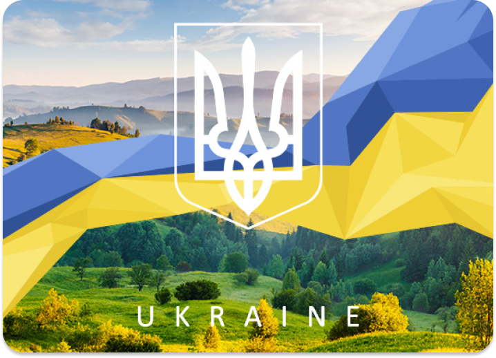
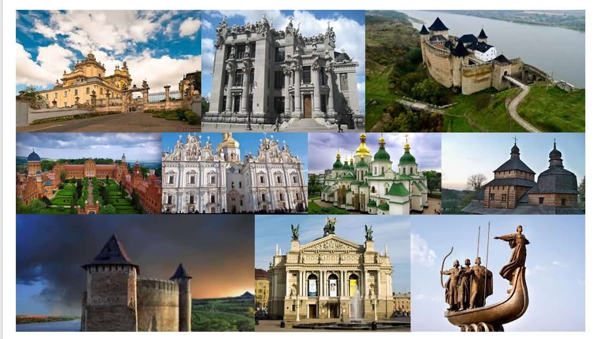

про караїн
Станом на останній перепис (2001), населення України становило 48,4 мільйона осіб. Основне й корінне населення України — це українці (77,8 % населення на 2001 рік. Також) офіційно корінними народами України є кримські татари, караїми та кримчаки[12]. Крім того, значною меншиною є росіяни (17,3 % населення на 2001 рік). Історично однією з найбільших меншин в Україні були також українські євреї.
cмаколики
Як формувалася українська кухня Вважається, що основу українських кулінарних традицій було покладено ще понад 7 тисяч років тому трипільцями! Саме тоді наші пращури навчилися робити хліб, який на тисячоліття став «усьому головою». Спочатку він був прісним, потім навчилися робити закваску, перші вироби були з житнього борошна, але в різних регіонах України до нього додавали різні інгрідієнти, що сприяло неймовірному різноманіттю. Свідченням цьому є навіть листи Бальзака, в яких він писав: «…Як ви приїдете на Україну, в цей рай земний, де я запримітив уже 77 способів приготування хліба».
пам'ятки
Зі славною і багатою історією, та забуті людьми. По всій Україні – безліч архітектурних пам’яток, якими у свій час пишалися і які були епіцентром історичних подій. Нині вони не втратили історичної цінності, але стали просто непотрібними… Історичні будівлі – приклади неокласицизму, бароко, неоготики та багатьох інших стилів. На жаль, вони залишені на поталу часу, який невблаганний до цих творінь. Пропонуємо добірку історичних споруд, які потребують негайної реставрації
